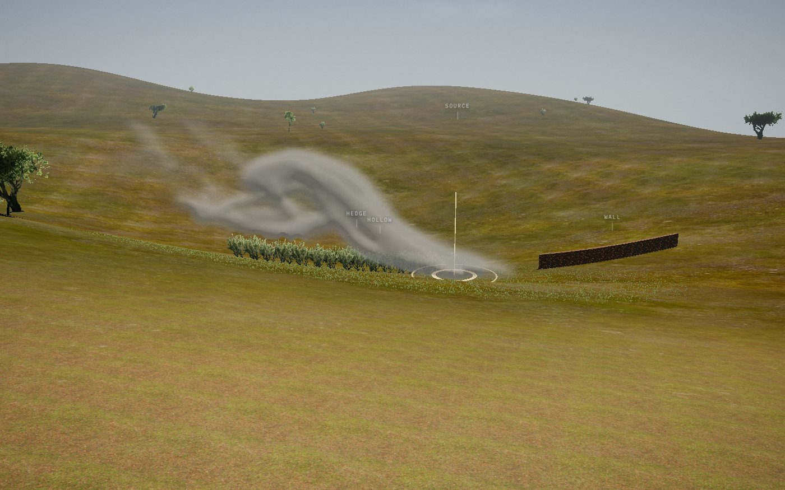
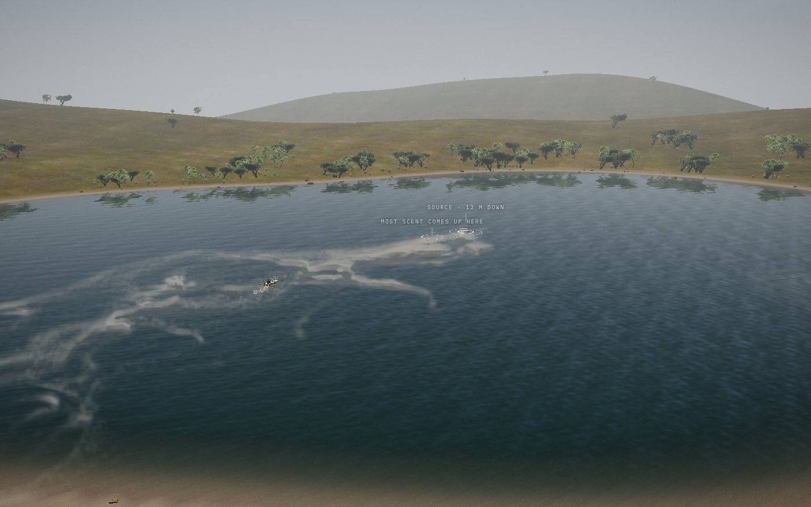

See where the scent goes.
Two 3D studies of how scent moves. Change the temperature, the wind or the water, and watch the scent respond. Each one explains in plain words what it is doing and why.

The field
A hillside with a stone wall, a hedge and a stand of trees. Set the ground and air temperature, the wind and the time of day. Move the source and see scent pool, lift, and find its way round what stands in front of it.
Open the field
The lake
Human-remains scent from a source under water. Set the depth, the water temperature, the current and the wind. Watch bubbles and droplets rise, the film drift on the surface, and a dog on a search boat work out where it comes up.
Open the lakeWorks on a computer and on a phone. It draws a few hundred thousand moving particles, so a recent device gives the smoothest picture.
These are illustrations, not forecasts. Each study has a sheet that says which numbers are measured, which are published rules, and which are only there to make the picture readable.
Trees, grass, stones and ground are scans and photographs from Poly Haven (public domain). Drawn with three.js.